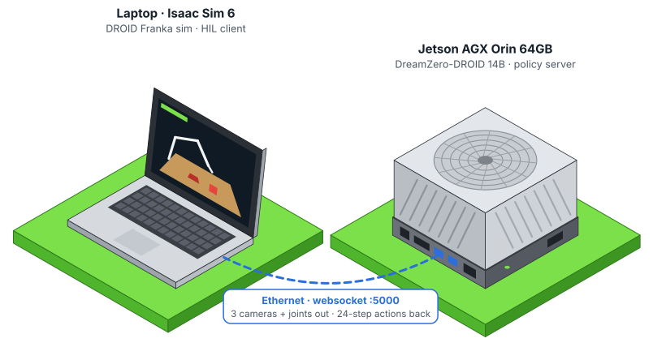

NVIDIA DreamZero-DROID runs as a policy server on a single Jetson AGX Orin 64GB. A laptop simulates the DROID Franka in Isaac Sim 6, streams its three cameras to the Orin and executes the actions that come back.

Screen capture from the laptop while DreamZero-DROID ran on the Orin (scene 1, “put the cube in the bowl”).
Jetson AGX Orin 64GB, L4T R39.2.1, torch 2.14.1+cu130, single process. Upstream targets 2× H100 or GB200.
For reference, the DreamZero README reports ~3 s on 2× H100 and ~0.6 s on GB200. On the Orin it is slow but correct: for “put the cube in the bowl” the first chunk is a smooth reach that starts at the current pose (shoulder +0.25 rad), and requests run indefinitely without running out of memory.
One websocket request per action chunk, the same protocol DreamZero uses for its own DROID evaluation.
ab790c1, Python 3.12, uv venvruns/All changes are opt-in environment variables applied to a pinned DreamZero checkout. With them unset, DreamZero behaves as upstream.
| Problem on the Orin | Fix | Switch |
|---|---|---|
| Stock loader holds the 46 GB state dict and a random fp32 model (~92 GB): ~140 GB peak | Build with weight init disabled, cast to bf16, stream tensors from the mmapped shards: 47 GB peak | DZ_LOWMEM=1 |
| Constructor loads or downloads ~44 GB of Wan2.1 base weights the checkpoint already contains | Skip component loading | DZ_SKIP_COMPONENT_LOAD=1 |
| Out of memory on the 3rd request as the autoregressive cache grows | Cache the prompt embedding, free the 11.4 GB umt5-xxl encoder, reload it only for a new prompt | part of DZ_LOWMEM |
NCCL error … unhandled system error on the first request | gloo process group (single process, collectives are no-ops) | DZ_DIST_BACKEND=gloo |
| torch.compile pushed memory to 60/61 GB with the GPU idle | Disable dynamo | TORCHDYNAMO_DISABLE=1 |
| No Transformer Engine or flash-attn for Orin | PyTorch SDPA | ATTENTION_BACKEND=torch |
| DROID sim needs Isaac Sim 5, which crashes on the laptop's driver | Ported to Isaac Sim 6 / Isaac Lab 3 (quaternion order, data API, PhysX config) | dreamzero_hil.droid_sim |
Isaac Sim 6 ships websockets 12 (no ping_interval); openpi-client pins numpy<2 | Compatible connect; vendored msgpack_numpy / image_tools | dreamzero_hil.client |
Two machines on the same network. Wired Ethernet on the Orin is strongly recommended (Wi-Fi gave us ~2 MB/s, wired ~50 MB/s).
git clone https://github.com/kabilankb/jetson-orin-agx-hil-dreamzero.git
cd jetson-orin-agx-hil-dreamzero/jetson
./setup_jetson.sh # code, venv, patches, 46 GB checkpoint
~/workspace/dreamzero/run_dreamzero_server.sh # tmux "dreamzero", port 5000python scripts/test_server.py --host <orin-ip> # one synthetic request, prints latency + chunkscripts/download_assets.sh # DROID scenes + Franka/Robotiq USD (~90 MB)
JETSON_HOST=<orin-ip> scripts/run_gui.sh --scene 1 # put the cube in the bowl
scripts/run_gui.sh --policy wave # sim check without a serverExpect the arm to move for about 1.6 s, then hold for about a minute while the Orin computes the next chunk. A full 30 s episode is ~19 requests, roughly 20 minutes.